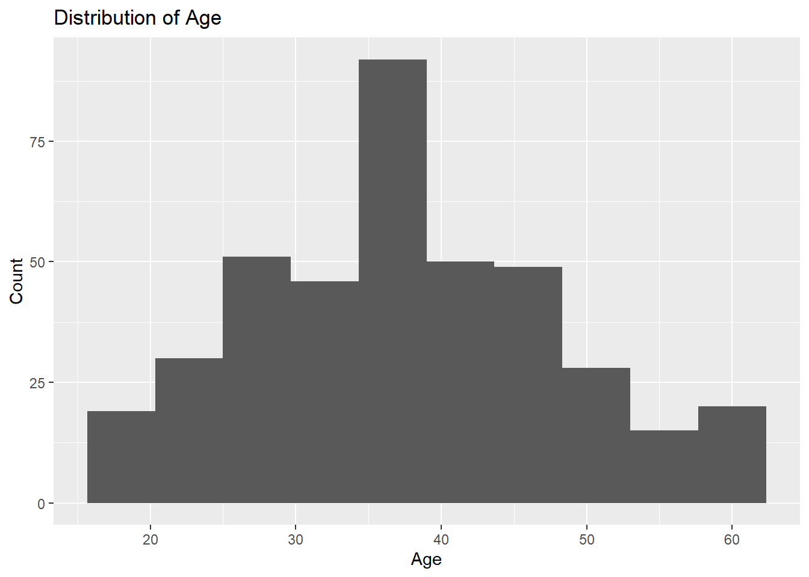

Chapter 6 Descriptive Analysis and Visualization
This chapter introduces two closely related tasks that are central to marketing analytics: descriptive analysis and visualization.
Descriptive analysis focuses on summarizing and understanding data numerically. Visualization focuses on exploring and communicating patterns graphically.
In this chapter, we begin with descriptive statistics and then move to visualization. Both rely on clean, well-understood data, as developed in earlier chapters.
6.1 Descriptive analysis
Descriptive analysis involves computing numerical summaries that describe the distribution and key characteristics of variables.
These summaries are often the first step in any marketing analysis and help you understand the data before modeling.
6.2 Overall summaries
A simple starting point is to compute summaries for the entire dataset, using either summary() from base R or using the dplyr package.
userid age buy gender salary
Min. :15566689 Min. :18.00 No :257 Male :196 Min. : 15.00
1st Qu.:15626764 1st Qu.:29.75 Yes:143 Female:204 1st Qu.: 43.00
Median :15694342 Median :37.00 Median : 70.00
Mean :15691540 Mean :37.66 Mean : 69.74
3rd Qu.:15750363 3rd Qu.:46.00 3rd Qu.: 88.00
Max. :15815236 Max. :60.00 Max. :150.00 directmktg %>%
summarize(
n = n(),
mean_age = mean(age),
sd_age = sd(age),
min_age = min(age),
max_age = max(age)
)# A tibble: 1 × 5
n mean_age sd_age min_age max_age
<int> <dbl> <dbl> <dbl> <dbl>
1 400 37.7 10.5 18 606.3 Summaries by group
In marketing analytics, we often want to compare summaries across groups, such as demographic segments or customer types.
directmktg %>%
group_by(gender) %>%
summarize(
n = n(),
mean_age = mean(age),
sd_age = sd(age),
buy_rate = mean(buy == "Yes")
)# A tibble: 2 × 5
gender n mean_age sd_age buy_rate
<fct> <int> <dbl> <dbl> <dbl>
1 Male 196 36.9 10.0 0.337
2 Female 204 38.4 10.9 0.377Each row in the output represents a group, and each column represents a summary statistic computed within that group.
Grouped summaries are especially useful for identifying differences across segments.
6.4 Frequency tables
For categorical variables, frequency tables are often more informative than numerical summaries.
No Yes
257 143 Two-way tables allow you to examine relationships between categorical variables.
No Yes
Male 130 66
Female 127 77These tables provide counts and are often used to compute proportions or rates.
6.5 Proportions and rates
Counts are often converted into proportions or rates to make results easier to interpret and compare.
In R, the proportions() function is used to convert frequency tables into
proportions.
6.5.1 Overall proportions
To compute proportions for a single categorical variable, first create a
frequency table and then apply (or “wrap it with”) proportions().
No Yes
0.6425 0.3575 This returns the proportion of observations in each category, where the proportions sum to 1 across the entire table.
6.5.2 Proportions from a cross-tab
When working with two categorical variables, table() produces a cross-tab. By default, proportions() computes proportions relative to the entire table.
No Yes
Male 0.3250 0.1650
Female 0.3175 0.1925These are called total proportions, because each cell is divided by the total number of observations.
6.5.3 Row proportions
Row proportions show how outcomes are distributed within each row category.
This is often useful when the rows represent groups or segments. We accomplish this by using the margin = 1 argument in proportions.
No Yes
Male 0.6632653 0.3367347
Female 0.6225490 0.3774510Here, each row sums to 1. For example, you can interpret the values as purchase rates within gender.
6.5.4 Column proportions
Column proportions show how groups are distributed within each column category. We accomplish this by using the margin = 2 argument in proportions.
No Yes
Male 0.5058366 0.4615385
Female 0.4941634 0.5384615In this case, each column sums to 1. These proportions are useful when you want to understand the composition of each outcome category.
6.6 Why descriptive analysis matters
Descriptive statistics help you to: - detect unusual values, - understand typical behavior, - compare groups, - and check whether results are plausible.
They also guide decisions about which models or visualizations are appropriate.
6.7 Visualization
Visualization complements descriptive analysis by revealing patterns that are difficult to see in tables alone.
In this course, visualization is primarily used for exploration and communication, not decoration.
6.8 Histograms
Histograms show the distribution of a numeric variable.
ggplot(directmktg, aes(x = age)) +
geom_histogram(bins = 10) +
labs(
x = "Age",
y = "Count",
title = "Distribution of Age"
)
Histograms help identify skewness, outliers, and general distribution shape.
6.9 Bar charts
Bar charts are commonly used for categorical variables.
ggplot(directmktg, aes(x = buy)) +
geom_bar() +
labs(
x = "Purchase Decision",
y = "Count",
title = "Purchase Outcomes"
)
6.10 Grouped bar charts
Grouped bar charts allow comparisons across categories.
ggplot(directmktg, aes(x = buy, fill = gender)) +
geom_bar(position = "dodge") +
labs(
x = "Purchase Decision",
y = "Count",
fill = "Gender",
title = "Purchase Outcomes by Gender"
)
6.11 Boxplots
Boxplots summarize distributions and are especially useful for comparing groups.
ggplot(directmktg, aes(x = gender, y = age)) +
geom_boxplot() +
labs(
x = "Gender",
y = "Age",
title = "Age Distribution by Gender"
)
6.12 Connecting tables and plots
Tables and plots serve complementary purposes:
- Tables provide precise numerical values
- Plots reveal patterns and differences quickly
In practice, analysts often use both, starting with tables and then using plots to explore or communicate findings.